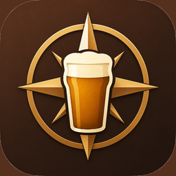
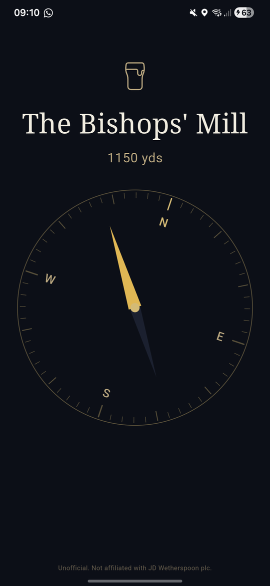
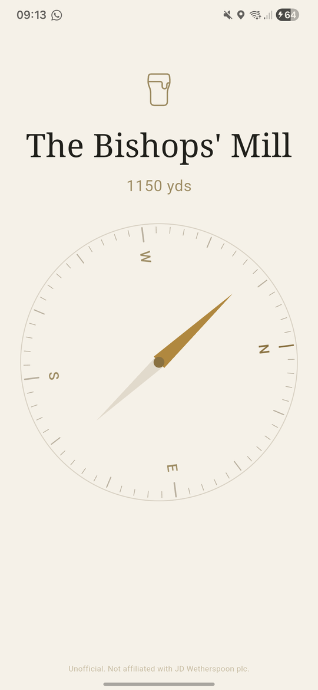

The arrow points the way.
Android Download .apkFree. No ads. No tracking. About 42 MB.
Open the app and a compass arrow points at your nearest J D Wetherspoon pub. The distance shows underneath. That's the entire app — no menus, no sign-in, no settings, no ads, nothing to tap.


Everything happens on your device. No data is sent anywhere. The list of pub locations is built into the app from public OpenStreetMap data. The app works perfectly offline.
Because Spoons Compass isn't on the Play Store, your phone will ask for permission to install it from a browser.
app-release.apk file.Android Play Protect may show a warning that the developer isn't recognised. That's normal for any app outside the Play Store. Tap Install anyway.